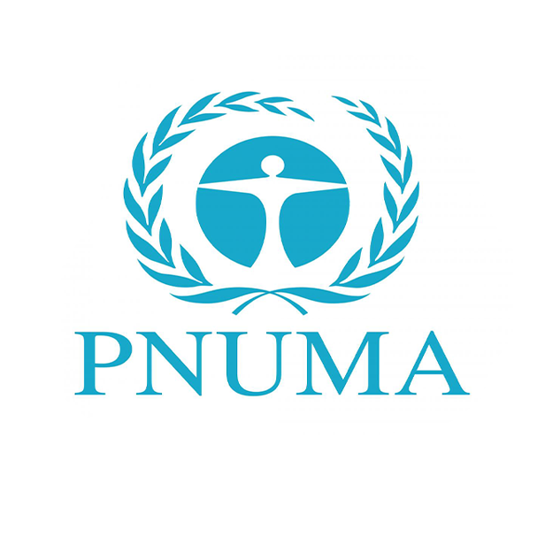
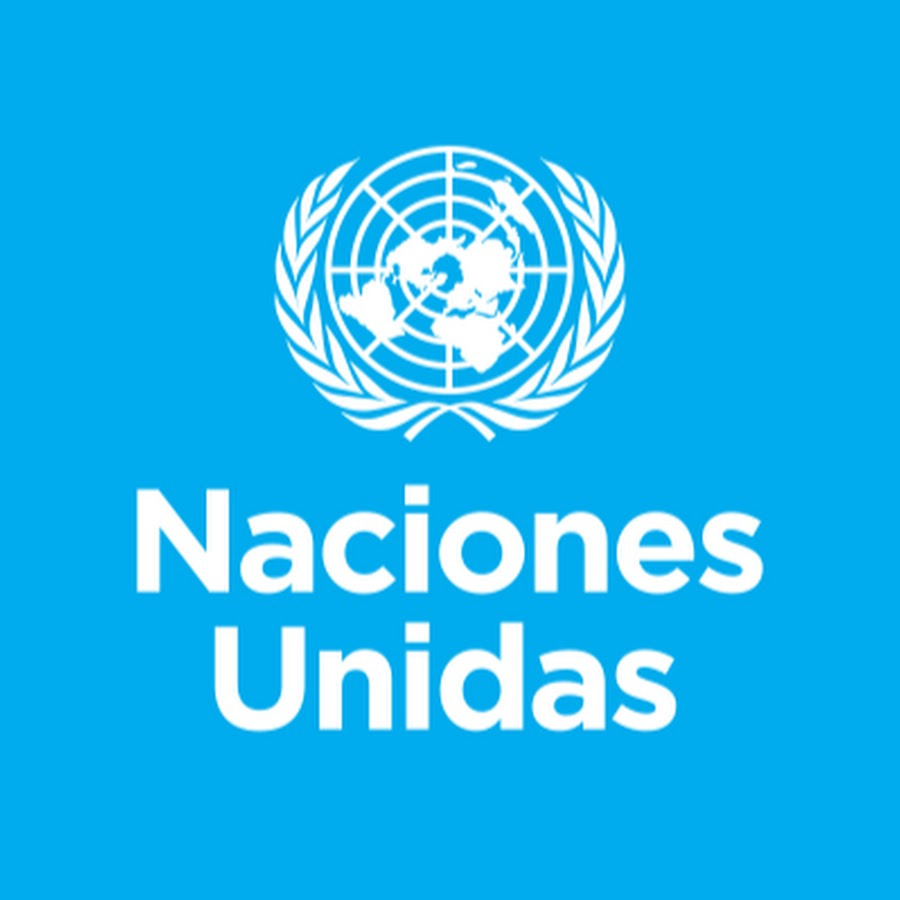
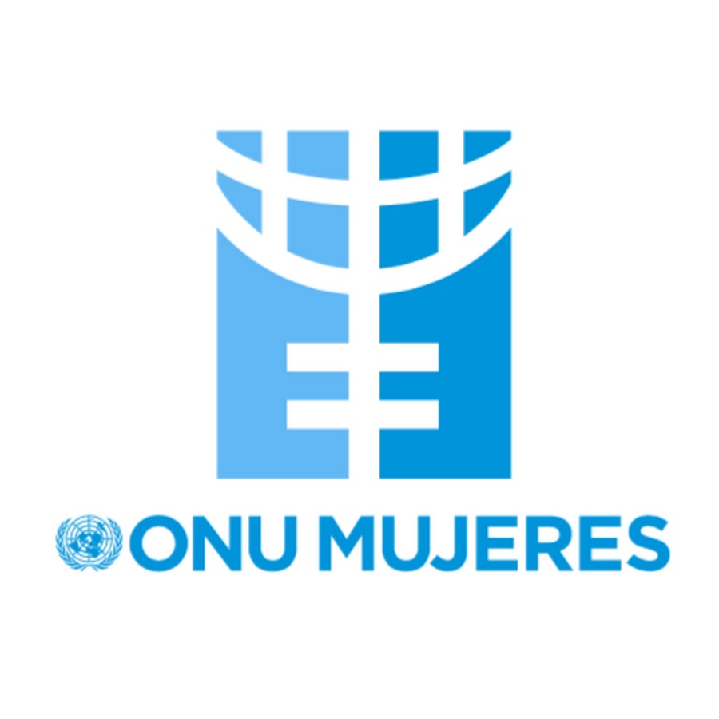

Cuidar a nuestra Madre Tierra
En el Día Internacional de la Madre Tierra necesitamos un cambio hacia una economía más sostenible que funcione tanto para las personas como para el planeta. Promovamos la armonía con la naturaleza y la tierra.
- Recuperar los ecosistemas de nuestro planeta.
- Combatir el cambio climático.
- Prevenir una extinción masiva.
- ¡Únete al movimiento mundial para restaurar la madre Tierra!
COP16 Colombia
Creación del Fondo Cali, un mecanismo multilateral para recaudar recursos económicos provenientes del uso de la información genética digital de la biodiversidad para su posterior reparto justo y equitativo. Sectores que contribuirán al fondo: farmacéutico, biotecnológico y agrícola.
Establecimiento del nuevo órgano subsidiario para pueblos indígenas y comunidades locales que fortalece acciones y proyectos asociados a sus saberes tradicionales, innovaciones y prácticas. También se aprobó el programa de trabajo para estas comunidades al 2030.
Historia del Día de la Tierra
- El mentor del Día de la Tierra fue el senador estadounidense Gaylord Nelson.
- La primera celebración impulsó la creación de la Agencia de Protección Ambiental (EPA).
- En 1990, el Día de la Tierra se celebró a nivel mundial en 140 países.
Organizaciones Promotoras
| ONU | PNUMA | ONU Mujeres |
|---|---|---|
|  |  |  |